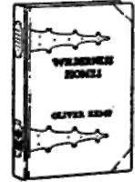
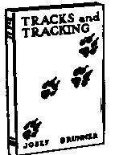
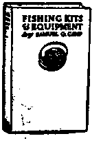

Outing How To Books
Description
This section is from the book "Camp Cookery", by Horace Kephart. Also available from Amazon: Camp Cookery.
Outing How To Books
Have been carefully selected from the out-door books of the Outing Publishing Company. No title is added to the list until its readers have demonstrated its exceptional merit as a practical manual.
Consequently these books offer complete and reliable courses of instruction in outdoor life. They summarize the experience of experts, and they are especially helpful in the selection and purchase of equipment and supplies.
Wherever possible they have been made pocket size for easy transportation. Every copy is printed on high grade bookpaper, artistically illustrated and bound attractively. They serve equally well in the open, in the library and as gifts.
OUTINGY PUBLISHING COMPANY
315 FIFTH AVENUE NEW YOIU CITY ^fff.
Outing How To Book No. 1. The Book Of Camping & Woodcraft
By HORACE KEPHART
It fits the pocket—an encyclopedia in 4% by 7 inches. Copiously illustrated 331 pages. Cloth, decorative, $z.jo postpaid.
"THE BOOK OF CAMPING AND WOOD-CRAFT," by Horace Kephart, is authoritative in every detail. No more valuable book on life in the woods has been produced.
It has an added charm for the old timer at tramping and camping—so much knowledge is here confined in so small a space; for the individual starting out on his first "open road " pilgrimage it is a veritable gold mine; for the man "just going out for a few days" it fills the same need. And back of all this is the fact that the book reads like a novel, so charmingly is it written.
List Of Contents
Outfitting.—The Sportsman's Clothing.—Personal Kits. — Tents and Tools. — Utensils and Food. —A Check List. —Packing up.—The Camp—The Camp-Fire.—Markmanship in the Woods. — Dressing and Keeping Game and Fish. — Camp Cookery.-Pests of the Woods.-Forest Travel.—Keeping a Course.—Blazes. —Survey Lines—Natural Signs of Direction.—Getting Lost.—Bivouacs. —Emergency Foods.—Living off the Country.-Edible Plants of the Wilderness. — Axemanship. — Qualities of Wood and Bark.- Trophies, Buckskin and Rawhide.— Tanning Pelts. —Other Animal Products. — Acci-dents: Their Backwoods Treatment.
Outing How To Book No. 2. Boat Sailing
(Fair Weather and Foul)
By CAPTAIN A. J. KENEALY
Pocket size 4\x8 inches. Illustrated. _
Cloth, decorattve. %i.oopostpaid.
THIS is the ninth edition of a capital book. The large ranee of subjects treated, the concise and thorough manner in which every topic is handled, at once pronounce the author an enviable authority in his line.
Includes advice and directions on Practically everything connected with small boats and sailing. Some of the chapter titles are; Choice of a Boat—Sailing in a gale or squall.—Fitting out Over Hauling.—Theory and Practice of Sailing.—Compass and Charts.—Nautical Terms.—Splicest Knots and Bends.
Outing How To Book No. 3. Wilderness Homes - A Book Of The Lotf Cabin
By OLIVER KEMP
Illustrated with half-tones from photographs of log- cabins, and numerous sketches by the author. Decorative wood veneer binding. 3¥*x8¥i inches. postpaid.
THIS volume tells how the amateur can build a log cabin at a minimum of expense. No detail is omitted. Numerous plans are given and valuable specifications. The chapters are as follows.
Making Plans.— The Fireplace.- The Axe and the Tree.—Building the Cabin.— The Hoof and the Floor.- The Cabin and Its Environment. — Inside the Cabin. — What It will Cost—Some Hunting Cabins. — A Few Plans— Witdwood, Crows Nest, A Club House, The Bloc* House, IdUwild, The Jolly Pines, The AntUrs.
Outing How To Book No. 4. Tracks & Tracking
By JOSEF BRUNNER.
Pocket site $*7\ in. Completely illustrated. Cloth. %i.35postpaid.
AFTER twenty years of patient study and practical experience, Mr. Brunner can, from his intimate knowledge, speak with authority on this subject.
"Tracks and Tracking" shows how to follow intelligently even the most intricate animal or bird tracks. It teaches how to interpret tracks of wild game and decipher the many tell-tale signs of the chase that would otherwise pass unnoticed. It proves how it is possible to tell from the footprints the name, sex, speed, direction, whether and how wounded, and many other things about wild animals and birds. All material has been gathered first hand; the drawings and half-tones from photographs form an important part of the work, as the author has made faithful pictures of the tracks and signs of the game followed. The list Is:
Enced hunter.
Outing How To Book No. 5. Fishing Kits & Equipment
By SAMUEL g. camp.
Pocket site—A x 7J inches. Illustrated. Cloth. $1.00 postpaid.
Acomplete guide to the angler buying a new outfit. Every detail of fishing kit of the freshwater angler is describee!, from rod-tip to creel and clothing. Special emphasis is laid on outfitting for fly fishing, but full instruction is is also given to the man who wants to catch pickerel, pike, muskellunge, lake-trout, bass and other fresh-water game fishes. Prices are quoted for all articles recommended and the approved method of selecting and testing the various rods, lines, leaders, etc., is described.

Continue to: